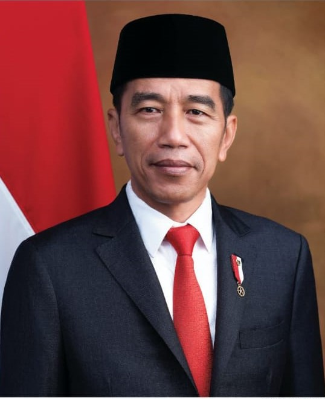
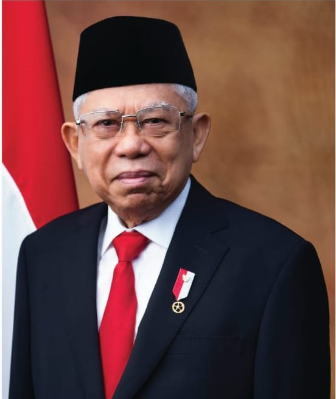

<!doctype html>
<html lang="en">
  <head>
    <!-- Required meta tags -->
    <meta charset="utf-8">
    <meta name="viewport" content="width=device-width, initial-scale=1">

    <!-- Bootstrap CSS -->
    <link href="https://cdn.jsdelivr.net/npm/bootstrap@5.1.3/dist/css/bootstrap.min.css" rel="stylesheet" integrity="sha384-1BmE4kWBq78iYhFldvKuhfTAU6auU8tT94WrHftjDbrCEXSU1oBoqyl2QvZ6jIW3" crossorigin="anonymous">

    <title>PESONA INDONESIA</title>
  </head>

    <!-- Optional JavaScript; choose one of the two! -->

    <!-- Option 1: Bootstrap Bundle with Popper -->
    <script src="https://cdn.jsdelivr.net/npm/bootstrap@5.1.3/dist/js/bootstrap.bundle.min.js" integrity="sha384-ka7Sk0Gln4gmtz2MlQnikT1wXgYsOg+OMhuP+IlRH9sENBO0LRn5q+8nbTov4+1p" crossorigin="anonymous"></script>
  </body>
</html><!doctype html>
<html lang="en">
  <head>
    <!-- Required meta tags -->
    <meta charset="utf-8">
    <meta name="viewport" content="width=device-width, initial-scale=1">

    <!-- bottsrap icons -->
    <link rel="stylesheet" href="https://cdn.jsdelivr.net/npm/bootstrap-icons@1.8.1/font/bootstrap-icons.css">
    
<!-- my css -->
<link rel="stylesheet" href="style.css">

    <title>WEB || Pesona indonesia</title>
  </head>
  <body id="home" id= "president" id="about" id="contack">
      <!-- Navbar -->
      <nav class="navbar navbar-expand-lg navbar-dark bg-secondary shadow fixed-top">
        <div class="container">
          <a class="navbar-brand" href="#">INDONESIA.</a>
          <button class="navbar-toggler" type="button" data-bs-toggle="collapse" data-bs-target="#navbarNavDropdown" aria-controls="navbarNavDropdown" aria-expanded="false" aria-label="Toggle navigation">
            <span class="navbar-toggler-icon"></span>
          </button>
          <div class="collapse navbar-collapse" id="navbarNavDropdown">
            <ul class="navbar-nav ms-auto">
              <li class="nav-item">
                <a class="nav-link active" aria-current="page" href="#home">Home</a>
              </li>
              <li class="nav-item">
                <a class="nav-link" href="#president">president</a>
              </li>
              <li class="nav-item">
                <a class="nav-link" href="#about">About</a>
              </li>
              </li>
              <li class="nav-item">
                <a class="nav-link" href="#contack">Contack</a>
              </li>
              <li class="nav-item">
                <a class="nav-link" href="blog.html">blog</a>
              </li>
            </ul>
          </div>
        </div>
      </nav>
      <!-- akhir navbar -->
       <!-- jymbotron -->
    <div class="container-fluid jumbotron">
        <div class="container text-center">
          <h4 class="display-5"><b>selamat datang di</b></h4>
          <h3 class="display-1"><b>pesona indonesia</b></h3>
          <a href="#mulai">
            <button type="button" class="btn btn-dark btn-lg">mulai</button>
          </a>
        </div>
      </div>
      <!--akhir jumbotron-->

      <!-- president dan wakil -->  
      <section id="president">
        <div class="container">
          <div class="row mb-5">
          <div class="col-md-8 mx-auto text-center">
            <h6 class="text-primary">PRESIDENT AND VICE PRESIDENT</h6>
            <h1>Meet our important figure</h1>
            <p>Mendengar nama Joko Widodo, tentu Anda pasti ingat dengan seorang gubernur yang suka blusukan. Sekarang ini nama Joko Widodo menjadi sangat terkenal dengan banyaknya para pakar yang menyebutkan jika dia adalah salah satu calon presiden yang paling potensial. Bahkan, banyak orang yang memprediksi jika dia adalah calon yang paling mungkin menang dalam pemilu tahun 2014. Dalam biografi Joko Widodo disebutkan jika dia lahir pada tanggal 21 Juni 1961 di kota Solo. dan benar saja dia berhasil memenangkan pilpres dan menjadi presiden indonesia. Dia berasal dari keluarga yang cukup sederhana. Akan tetapi dengan kerja keras, membuat pria ini bisa sukses.</p>
            <p>Prof. Dr. K. H. Ma'ruf Amin adalah Wakil Presiden Indonesia ketiga belas sejak 20 Oktober 2019. Ketika Pemilu Presiden 2019, Joko Widodo mengumumkan nama Ma'ruf Amin sebagai calon Wakil Presiden. Pencalonannya didukung penuh oleh Koalisi Indonesia Kerja dan pada akhirnya berhasil memenangkan Pilpres.</p>
          </div>
          </div>
          <div class="row text-center">
            <div class="col-lg-3 col-sm-6">
              <div class="team-member card-effect">
                <div class="social-icons">
                  <a href="#"><i class='bx bxl-facebook'></i> </a>
                </div>
              </div>
            </div>
            <div class="col-lg-3 col-sm-6">
              <div class="team-member card-effect">
                
                <h5 class="mb-0 mt-4">Ir. H. Joko Widodo</h5>
                <p>president</p>
                <div class="social-icons">
                  <a href="#"><i class="bi bi-facebook"></i></a>
                  <a href="#"><i class="bi bi-instagram"></i></a>
                  <a href="#"><i class="bi bi-twitter"></i></a>
                </div>
              </div>
            </div>
            <div class="col-lg-3 col-sm-6">
              <div class="team-member card-effect">
                
                <h5 class="mb-0 mt-4">Prof. Dr. (HC.) K. H. Ma'ruf Amin</h5>
                <p>wakil president</p>
                <div class="social-icons">
                  <a href="#"><i class="bi bi-facebook"></i></a>
                  <a href="#"><i class="bi bi-instagram"></i></a>
                  <a href="#"><i class="bi bi-twitter"></i></a>
                </div>
              </div>
            </div>
          </div>
        </div>
      </section>
      <!-- president dan wakil -->

      <!-- about -->
      <section id="about">
          <div class="container">
              <div class="row text-center mb-3">
                  <div class="col">
                    <h6 class="text-primary">TENTANG KEINDAHAN INDONESIA</h6>
                      <h1 style="size: 20px;">About</h1>
                  </div>
              </div>
              <div class="container">
                <div class="row mb-5">
                <div class="col-md-8 mx-auto text-center">
                  <p>Indonesia merupakan negara yang memiliki berjuta keindahan Panorama didalamnya. Kekayaan akan sumber daya alamnya merupakan daya tarik tersendiri bagi nerga-negara lain. Tentunya pemandangan dan keindahan alamnya juga banyak dan beragam, mulai dari sabang sampai merauke terdapat keindahan alam yang tersembunyi yang tidak dimiliki oleh negara lain. Maka dari itu cintailah dan rawatlah alam yang kita miliki ini.</p>
                  <p>Keindahan merupakan sifat dan ciri dari orang, hewan, tempat, objek, atau gagasan yang memberikan pengalaman persepsi kesenangan, bermakna, atau kepuasan. Dalampengertian yang lain diartikan sebagai keadaan yang enak dipandang, cantik, bagus benar atau elok. Keindahan dipelajari sebagai bagian dari estetika, sosiologi, psikologi sosial, dan budaya. Sebuah “kecantikan yang ideal” adalah sebuah entitas yang dikagumi, atau memiliki fitur yang dikaitkan dengan keindahan dalam suatu budaya tertentu, untuk kesempurnaannya.</p>
                  <p>Keindahan dalam arti luasadalah keindahan dalam arti luas mengandung pengertian ide kebaikan. Misalnya Plato menyebut watak yang indah dan hukum yang indah, sedangkan Aristoteles merumuskan keindahan sebagai sesuatu yang baik dan juga menyenangkan dengan meliputi keindahan seni, keindahan alam,keindahan moral dll
                    Keindahan dalam arti yang terbatas mempunyai arti yang lebih disempitkan sehingga hanya menyangkut bendabenda yang dapat -diserap dengan penglihatan, yakni berupa keindahan bentuk dan warna. keindahan tersusun dari berbagai keselarasan dan kebalikan dari garis, warna, bentuk, nada, dan kata-kata. Ada pula yang berpendapat bahwa keindahan adalah suatu kumpulan hubungan-hubungan yang selaras dalam suatu benda dan di antara benda itu dengan si pengarnat.</p>
                </div>
                </div>
              <div class="row justify-content-center fs-5 text-center">
                  <div class="col-md-4">
                  </div>
          </div>
      </section>

      <!-- akhir about -->

      <!-- contack -->
      <section id="contack">
<div class="container">
    <div class="row text-center">
        <div class="col">
            <h2> Contack Me</h2>
        </div>
    </div>
    <div class="row justify-content-center mb-3">
        <div class="col-md-6">
            <form>
                <div class="mb-3">
                  <label for="name" class="form-label">Nama Lengkap</label>
                  <input type="text" class="form-control" id="name" aria-describedby="name">
                </div>
                <div class="mb-3">
                  <label for="email" class="form-label">Email</label>
                  <input type="email" class="form-control" id="email" aria-describedby="email">
                </div>
                <div class="mb-3">
                    <label for="pesan" class="form-label">pesan</label>
                    <textarea class="form-control" id="exampleFormControlTextarea1" rows="3"></textarea>
                  </div>
                <button type="submit" class="btn btn-primary">Submit</button>
              </form>
  </div>
    </div>
</div>
      </section>
      <!-- akhir contak -->

      <!-- fotter -->
      <footer class="bg-secondary text-white text-center pb-2 pt-3">
          <p>ありがとうございます</p>
      </footer>
      <!-- akhir fotter -->
    <script src="https://cdn.jsdelivr.net/npm/bootstrap@5.1.3/dist/js/bootstrap.bundle.min.js" integrity="sha384-ka7Sk0Gln4gmtz2MlQnikT1wXgYsOg+OMhuP+IlRH9sENBO0LRn5q+8nbTov4+1p" crossorigin="anonymous"></script>
  </body>
</html>